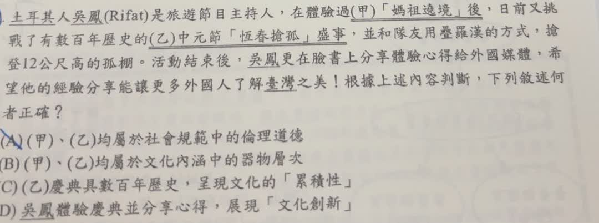

分享原卷｜文化觀念題（照片題號被筆跡遮蓋）
完整原題
土耳其人吳鳳（Rifat）是旅遊節目主持人，在體驗過（甲）「媽祖遶境」後，日前又挑戰了有數百年歷史的（乙）中元節「恆春搶孤」盛事，並和隊友用疊羅漢的方式，搶登12公尺高的孤棚。活動結束後，吳鳳更在臉書上分享體驗心得給外國媒體，希望他的經驗分享能讓更多外國人了解臺灣之美！根據上述內容判斷，下列敘述何者正確？
(A) （甲）、（乙）均屬於社會規範中的倫理道德
(B) （甲）、（乙）均屬於文化內涵中的器物層次
(C) （乙）慶典具數百年歷史，呈現文化的「累積性」
(D) 吳鳳體驗慶典並分享心得，展現「文化創新」
先想一想，再查看答案、解說與原圖
原卷作答：B
正確答案：C。慶典經過長期傳承、形成數百年的歷史，符合文化的累積性。
逐項解析
| 選項與原句 | 判讀 | 句意與判斷理由 |
|---|---|---|
| (A) （甲）、（乙）均屬於社會規範中的倫理道德 | 不選 | 遶境與搶孤主要是宗教信仰及民間習俗活動，不能直接歸為倫理道德。 |
| (B) （甲）、（乙）均屬於文化內涵中的器物層次 | 不選 | 題目描述慶典與儀式，不是單純描述建築或工具等有形器物。 |
| (C) （乙）慶典具數百年歷史，呈現文化的「累積性」 | 應選 | 慶典經過長期傳承、形成數百年的歷史，符合文化的累積性。 |
| (D) 吳鳳體驗慶典並分享心得，展現「文化創新」 | 不選 | 體驗既有慶典並分享心得，較接近文化學習、交流與傳播，沒有描述創造新的文化內容。 |
詳細說明與解題步驟
一、把線索對回文化特性
乙活動有「數百年歷史」，表示文化在群體中長期傳承與累積，這是 C 的直接依據。
二、分辨文化內容的層次
器物層次指看得見、摸得到的工具或物品。題幹雖提到孤棚，但主要描述的是慶典及儀式；不能因為活動會使用器物，就把整個活動當成器物層次。原卷選 B，混淆了「活動內容」與「活動使用的東西」。
三、分辨傳播與創新
主持人體驗臺灣慶典，透過外國媒體讓更多人知道，重點是學習、交流與傳播。文中沒有指出發明新儀式或創造新文化形式，因此 D 不成立。
核對註記：已核對題幹、全部選項與必要材料；教材對應課次未確認，歸綜合。
原圖（僅本題）
